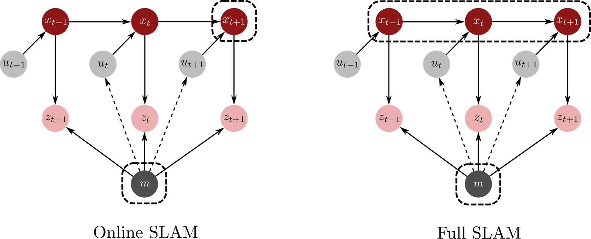

同步定位与建图（SLAM）
在第 13 章中，我们在假设环境地图 已知的前提下研究了机器人定位（localization）。虽然这一假设简化了估计过程，但在实际应用中却很少能够得到满足。机器人往往在先验未知（a priori unknown）或仅部分已知的环境中运行。典型的例子包括倒塌建筑物中的自主搜救、行星探测以及水下结构建图等。在这些场景中，机器人必须依据含噪的传感器数据，同时推断自身状态并构建地图。这一联合估计问题被称为同步定位与建图（simultaneous localization and mapping，SLAM）。术语 SLAM 及其诸多经典算法由 Thrun 等人（2005）注1. Thrun, S., Burgard, W., Fox, D. Probabilistic Robotics. MIT Press, 2005.推广普及，该著作至今仍是该领域的标准参考书。
SLAM 在自主系统的感知与导航层中起着核心作用。通过提供一个一致且随时间演化的空间参考系，它使下游的规划、控制和决策组件能够在先前未见过的环境中高效运作。
SLAM 问题起源于 20 世纪 80 年代末，Hugh Durrant-Whyte、John Leonard 等人的开创性工作将其表述为位姿与地图的概率联合估计。早期方法将 SLAM 视为一个大规模滤波问题。扩展卡尔曼滤波（EKF）注12. Smith, Randall, Self, Matthew, Cheeseman, Peter. “Estimating uncertain spatial relationships in robotics.” In Autonomous robot vehicles, 167–193. Springer, 1990. Leonard, John J, Durrant-Whyte, Hugh F. “Simultaneous map building and localization for an autonomous mobile robot..” In IROS, 1442–1447, 1991.提供了一种概念上十分优雅的途径，用于维护所有机器人位姿与地标的联合高斯分布。在此形式化表述中，状态向量包含机器人位姿以及所有 个地标的位置，EKF 维护一个 的协方差矩阵，其中编码了任意一对变量之间的相关性。随着地图规模的增长，存储和更新这个稠密协方差矩阵需要 的内存和计算量，这在大规模建图中很快变得难以承受。此外，非线性运动模型和观测模型围绕单一均值的反复线性化，会引入估计不一致性（inconsistency）并产生过于乐观的不确定性估计。
2000 年代初，粒子滤波方法（最著名的是 FastSLAM注13. Montemerlo, Michael, Thrun, Sebastian, Koller, Daphne, Wegbreit, Ben et al. “FastSLAM: A factored solution to the simultaneous localization and mapping problem.” Aaai/iaai 593598(2), 593–598, 2002.）提供了一种截然不同的视角。通过将机器人轨迹的基于粒子表示与各地标的独立高斯估计相结合（这一技术被称为 Rao–Blackwell 化（Rao–Blackwellization）），FastSLAM 提升了可扩展性，并且能更灵活地处理数据关联问题。这里，数据关联（data association）指的是确定每个新传感器测量对应于先前建好的哪个地标（如果存在对应的话），当多个地标外观相似或传感存在噪声时就会产生这种二义性。与此同时，粒子滤波方法容易遭受粒子耗散（particle depletion）。在长轨迹上，反复的加权与重采样会导致大多数粒子的权重变得微不足道，实际上只剩下少数几个互不相同的假设。一旦发生这种情况，粒子集便不再能很好地近似后验分布，除非使用大量粒子或设计更精巧的建议分布，否则算法可能会变得脆弱。
随后在 2000 年代中期，研究界采纳了基于优化的视角。研究人员不再逐步更新滤波器，而是将 SLAM 表述为位姿图（pose graph）上的稀疏非线性最小二乘问题。在这种表示中，节点对应于机器人位姿，而边代表由里程计、回环或扫描匹配获得的相对位姿约束。这一基于图的 SLAM（graph-based SLAM）视角使得利用底层问题的稀疏性、借助鲁棒代价函数应对外点、以及应用增量式求解器实现实时运行成为可能注代表性系统包括 Lu 与 Milios（1997）早期的位姿图构想，以及平方根 SAM、iSAM 和 g2o 等现代优化与增量平滑方法。。因子图（factor graph）形式进一步推广了这一思想：机器人位姿和地图变量都被表示为节点，而每个测量或先验都贡献一个因子（factor），即联合概率密度中仅依赖于少数变量子集的局部项。因子图提供了一种统一的方式，将各类异构约束（从里程计到地标观测以及标定参数）编码到单一概率模型中，如今构成了大多数现代 SLAM 后端的基石注17. Dellaert, Frank. “Factor graphs and GTSAM: A hands-on introduction.” Georgia Institute of Technology, Tech. Rep 2(4), 2012. Dellaert, Frank. “Factor graphs: Exploiting structure in robotics.” Annual Review of Control, Robotics, and Autonomous Systems 4(1), 141–166, 2021.。
近年来，SLAM 的发展已超越了纯粹的几何建图。视觉与视觉-惯性 SLAM、稠密三维重建、语义建图、神经隐式表示（如 NeRF 与 3D 高斯泼溅）以及基于学习的前端，都建立在相同的概率基础之上，同时拓展了 SLAM 所适用的环境与任务范围。现代 SLAM 系统融合了概率估计、大规模优化以及学习到的表示，并日益被视为更广泛的“空间智能（spatial AI）”系统的核心组件。
在本章余下部分中，我们将建立一个连通这些思想的统一 SLAM 视角。14.1 节介绍 SLAM 的主要算法范式，区分基于滤波与基于平滑的后端，并阐明各自在现代系统中的作用。接着，我们在 14.2 节转向 SLAM 前端，描述原始传感器数据如何转化为约束，然后在 14.3 节讨论特定模态的流水线，展示视觉、激光雷达和毫米波雷达 SLAM 的代表性设计。以此直观认识为基础，14.4 节将 SLAM 形式化为贝叶斯状态估计问题，引入运动与观测的底层状态空间模型，并推导在线 SLAM 与全 SLAM 的表述。随后的章节在具体算法中实例化该框架：14.5 节介绍 EKF-SLAM，14.6 节介绍如 FastSLAM 等基于粒子滤波的方法，相关章节介绍包括位姿图 SLAM 和因子图 SLAM 在内的基于优化的方法。最后，在 14.9 节中，我们综述进阶与前沿方法、稠密与语义建图、神经隐式表示以及基于学习的前端，并将它们与更广阔的空间智能愿景联系起来。
SLAM 范式
现代 SLAM 系统通常在概念上划分为两个层次。前端（front-end）处理原始传感器数据，并提取状态与地图元素之间的一组约束：特征、对应关系、相对位姿以及回环（loop closures）。回环发生在机器人重新回到先前访问过的地点，并获得连接两个非相邻位姿的测量时注例如识别出很早之前走过的走廊或房间。，这些约束对于校正累积漂移至关重要。后端（back-end）接收所有这些约束并求解底层的估计问题，求解方式可以是递推式的（滤波），也可以是在某个窗口或整条轨迹上进行优化（平滑）。
在本节中，我们聚焦于后端，并区分两种主要范式：基于滤波（filter-based）的方法和基于平滑（smoothing-based）的方法。两者都植根于稍后在 14.4 节引入的相同概率模型，但在显式估计哪些变量以及如何利用过去测量方面做出了不同的选择。
基于滤波的方法
基于滤波的 SLAM 维护一个紧凑的状态估计，并在新的传感器测量到达时进行在线更新。其核心思想是利用递推贝叶斯滤波传播当前机器人状态与地图上的信度，而无需在每一步显式回顾所有过去的数据。
在 EKF-SLAM 中，机器人状态和地图被堆叠为单个增广状态向量，联合信度被建模为多元高斯分布。运动模型和观测模型围绕当前估计进行线性化，并在每个时间步应用 EKF 预测-校正方程（关于底层 EKF 机制参见相关章节）。这给出了一个增量融合信息的在线算法，但对于 个地标和 个机器人状态变量，其协方差矩阵是大小为 的稠密矩阵。存储和更新该矩阵需要 的内存和计算开销，随着地图增大这很快变得无法承受。此外，由于非线性运动模型和观测模型围绕单一均值被反复线性化，线性化误差会随时间累积，导致不一致的不确定性估计（例如参见 Thrun 等人（2005）注3. Thrun, S., Burgard, W., Fox, D. Probabilistic Robotics. MIT Press, 2005.）。
Rao–Blackwell 化粒子滤波（例如 FastSLAM注18. Montemerlo, Michael, Thrun, Sebastian, Koller, Daphne, Wegbreit, Ben et al. “FastSLAM: A factored solution to the simultaneous localization and mapping problem.” Aaai/iaai 593598(2), 593–598, 2002.）采用了一种混合策略。粒子滤波表示机器人轨迹上的分布，而每个粒子携带各地标的独立高斯估计。在以采样的轨迹为条件时，地标估计变得条件独立，因此可以通过运行一组易于处理的卡尔曼滤波器（具体而言是每个地标一个）来更新地图，而无需运行单个庞大的联合滤波器。这种因子分解显著降低了每次更新的开销，并使处理歧义数据关联变得更加容易。与此同时，基于粒子滤波的方法引入了新的实际挑战，例如设计良好的建议分布、避免长轨迹上的粒子耗散以及维护全局一致性。关于 FastSLAM 和 Rao–Blackwell 化粒子滤波的详细论述可见 Thrun 等人注19. Thrun, S., Burgard, W., Fox, D. Probabilistic Robotics. MIT Press, 2005.。
当计算和内存预算紧张，且以有界单步开销实现实时在线运行为首要要求时，基于滤波的方法极具吸引力。然而，当长期一致性、大规模建图和强力回环闭合至关重要时，滤波方法可能难以充分利用所有可用测量，尤其是那些在相距遥远的位姿之间建立强约束的测量。
基于平滑的方法
基于平滑的 SLAM 将整条机器人轨迹和地图视为全局估计问题中的变量。平滑方法不是仅维护当前后验 ，而是旨在恢复出：(i) 全后验 ，或 (ii) 整条轨迹与地图的最大后验（MAP）估计。
表达这一问题的一种便捷方式是采用带有节点和边/因子的图（graph）表示：
- 节点（Nodes）代表未知变量，例如不同时刻的机器人位姿以及地标位置。
- 边（Edges）或因子（factors）代表联系这些变量的一小部分子集的测量或先验：连续位姿之间的里程计约束、非连续位姿之间的回环约束、将位姿与地标耦合的地标观测，以及固定地图参考的先验项。
在位姿图（pose graph）中，节点是位姿变量，边是相对位姿约束（里程计与回环）。在更一般的因子图（factor graph）中，位姿与地图变量都是节点，而每个测量都贡献一个因子注联合概率密度中的局部项，仅依赖于该测量所涉及的变量。。
从概率角度来看，每个因子对应于一个似然项或先验项，整体目标（对于 MAP 估计）是找到同时最佳满足所有因子的轨迹与地图。在高斯假设下，这引出一个稀疏非线性最小二乘问题。稀疏性源于每个测量仅涉及少数变量注例如，单个相对位姿约束仅涉及两个位姿，单个地标观测仅涉及一个位姿和一个地标。，因此相应的雅可比矩阵和海森矩阵包含大量零元素。现代稀疏求解器利用这一结构高效求解超大规模 SLAM 问题。关于基于图和因子图的 SLAM 的参考文献包括 Dellaert 与 Kaess（2006）注4. Dellaert, Frank, Kaess, Michael. “Square root SAM: Simultaneous localization and mapping via square root information smoothing.” The International Journal of Robotics Research 25(12), 1181–1203, 2006.、Kaess 等人（2008）注5. Kaess, Michael, Ranganathan, Ananth, Dellaert, Frank. “iSAM: Incremental smoothing and mapping.” IEEE Transactions on Robotics 24(6), 1365–1378, 2008.以及 Kümmerle 等人（2011）注6. Kümmerle, Rainer, Grisetti, Giorgio, Strasdat, Hauke, Konolige, Kurt, Burgard, Wolfram. “g 2 o: A general framework for graph optimization.” In 2011 IEEE international conference on robotics and automation, 3607–3613, 2011.。
相比纯滤波，平滑具有两大核心优势：
- 1. 它能够根据新数据重新线性化（re-linearize）约束。当新测量到达时（例如来自回环），可以重新优化整条轨迹与地图，相比仅更新当前状态的滤波器，这显著提高了一致性。
- 2. 它通过显式添加非连续位姿之间的约束并调整整条轨迹以满足这些约束，从而自然地融入回环。当机器人重访已知区域时，这使得累积漂移能够沿路径重新分布并被消除。
范式的选择
在实践中，滤波与平滑之间的选择取决于若干因素：
- 实时性约束：若需要具有严格有界单步延迟的严格实时更新，且计算资源受限，则基于滤波的方法（EKF-SLAM、FastSLAM）极具吸引力。
- 问题规模与回环：对于具有大量回环和漫长任务的大规模环境，基于平滑的方法以及位姿图或因子图表述往往能产生更精确且一致的地图，因为它们能在新约束到达时重新优化完整轨迹。
- 实现复杂度：滤波器在概念上简单明了，对小型系统通常更容易实现。基于图的方法需要额外的数学与软件基础设施注例如稀疏线性代数和非线性优化库。，但一旦搭建完成就具有高度的模块化和可扩展性。
- 应用侧重点：短期导航可能侧重于快速局部里程计和适度的地图维护；而长期建图、多会话（multi-session）运行和多机器人场景则极大地受益于平滑和图优化所提供的全局一致性。
在现代系统中，这两种范式之间的界限日益模糊。如 iSAM注20. Kaess, Michael, Ranganathan, Ananth, Dellaert, Frank. “iSAM: Incremental smoothing and mapping.” IEEE Transactions on Robotics 24(6), 1365–1378, 2008.等增量平滑方法在保留批量优化诸多优势的同时提供了实时更新，并作为现代机器人代码库中的 SLAM 后端得到广泛应用。
前端
到目前为止，我们主要关注后端表述：在约束给定之后，如何构建并求解估计问题。然而在 SLAM 系统中，这些约束并非凭空出现。它们是由前端（front-end）从原始传感器数据中提炼出来的，前端将像素、点云等测量转换为离散关系——如相对位姿、地标观测和回环——随后由后端来施加这些约束。
理解这种分工的一种有益方式如下：后端是推理引擎，负责对机器人的运动历史与环境结构进行推理；而前端是感知流水线，决定了后端能看到什么信息以及这些信息如何打包。若前端产生系统性外点或微弱无信息的约束，再强大的后端也无能为力。
在宏观层面上，大多数 SLAM 前端都可以理解为同一概念流水线的变体：
- 1. 特征提取：识别传感器数据中的显著结构，如关键点、边缘、几何基元和学习到的描述子。
- 2. 数据关联：判定当前的哪些特征对应于先前见过的哪些特征或地图元素。
- 3. 外点剔除：在不一致或虚假的关联污染估计结果之前将其检测并剔除。
- 4. 回环检测：识别先前访问过的地点，以添加校正漂移的长程约束。
- 5. 扫描对齐与配准：对于测距数据，估计重叠点云之间的相对位姿。
每个阶段的具体实现严重依赖于传感模态注例如相机、激光雷达、毫米波雷达等。，但它们在 SLAM 系统中的作用是相通的：它们决定了环境的哪些部分成为图中的地标或边、我们以多大的置信度关联不同位姿、以及何时引入强有力的回环约束。在本小节的余下部分中，我们简要回顾这些阶段，将它们与前几章开发的感知工具联系起来，并强调它们对 SLAM 的整体影响。
特征提取
从 SLAM 的角度来看，特征提取是决定环境的哪些方面将充当定位与建图的“抓手”的步骤。这直接建立在第 8 章的经典感知技术之上，该章介绍了图像滤波、边缘与角点检测、描述子以及几何特征提取，同时也建立在相关章节的点云配准工具之上。注第 9 章介绍的用于感知的深度学习架构为手工设计特征提供了学习替代方案，并越来越多地应用于现代 SLAM 前端中。
在视觉 SLAM 中，前端通常利用经典方法（如 Harris 角点和类似 SIFT 的描述子）或现代学习特征，来检测并描述可重复的图像特征（例如角点、斑点或局部图像块）。这些特征被选取为对视角和光照变化具有鲁棒性，从而能够在时间序列之间以及不同相机之间可靠匹配。正如第 6 章和第 7 章所讨论的，由此得到的二维关键点和描述子构成了在相机位姿与三维地标之间构建几何约束（如对极关系和重投影误差）的基础。
在基于激光雷达的 SLAM 中，类似的作用由点云中的几何基元承担：平面、边缘、角点状结构或局部表面片元。提取这些基元注例如利用第 8 章中的分割和模型拟合方法。提供了稳定的锚点，可在多次扫描之间进行跟踪，并用于帧间扫描（scan-to-scan）或帧到地图（scan-to-map）的配准。
对于毫米波雷达和其他模态，特征提取必须应对较低的分辨率、杂波（clutter）和多径效应。车载毫米波雷达的一种常用表示是距离-多普勒图像（range–Doppler image）：通过对原始雷达线性调频脉冲（chirp）应用傅里叶变换获得的二维数组，其水平轴索引距离（range）单元（距传感器的距离），垂直轴索引多普勒（Doppler）单元（径向速度）。每个像素的强度反映了在给定距离和相对速度下目标的反射回波强度，因此距离-多普勒图像可以视为一幅同时编码物体位置及其运动速度的灰度图像。在这种表示中，手工设计的几何线索往往与学习到的表示注例如直接在距离-多普勒图像上运行的卷积神经网络（CNN）。相结合，以生成鲁棒、可重复且能够随时间跨帧匹配的特征签名。
数据关联
一旦特征提取完成，下一个关键步骤便是数据关联（data association）：判定时刻 观测到的特征是否对应于先前观测到的特征或地图元素。这就是将“当前图像中的这个角点”转换为“两秒前看到的同一个角点”或“地图中的地标 ”的机制。
正如第 13 章定位设定中所述，数据关联极具挑战性：感知混淆（perceptual aliasing）、传感器噪声、遮挡和环境变化都会使不同的地点看起来相似，而同一个地点随时间推移又可能呈现不同的外观。一次正确的关联会在位姿和地标之间引入有效的约束，而错误的关联则可能注入巨大的、带有系统偏差的约束，进而破坏整个估计结果。
在实践中，SLAM 系统综合利用多种技术进行数据关联，包括：
- 描述子相似度，例如视觉关键点在特征空间中的距离。
- 来自当前状态估计的几何预测，例如将地标投影到图像中或扫描点云中。
- 概率门限判定（gating）：仅当候选匹配落在依赖于不确定性的区域内时（通常使用马氏距离）才予以接受。
- 更高层次的线索，例如语义标签（如特征是否属于“门”这一物体类别）或时间连续性。
在许多系统中，数据关联是最脆弱的环节，但设计具有高查全率（少漏匹配）和高查准率（少误匹配）的策略对于稳健运行依然至关重要。
外点剔除
即便进行了细致的关联，仍会有部分匹配发生错误。因此，前端必须包含显式机制，在外点（outliers）到达后端之前对其进行识别与剔除。这与第 8 章讨论的几何验证和模型拟合流水线注例如用于直线拟合或物体位姿估计的 RANSAC。如出一辙，只不过现在的模型变成了相机几何、相对位姿或扫描对齐。外点剔除的常用策略包括：
- 几何一致性检查：例如验证匹配特征是否满足对极约束，或者 3D-2D 对应关系是否与合理的相机位姿兼容。
- 鲁棒模型拟合：例如利用 RANSAC 及其变体从假定匹配中推断相对位姿或单应矩阵，同时舍弃外点。
- 残差上的统计检验：将误差与期望协方差不一致的测量予以舍弃或降权。
- 与当前地图的一致性：例如要求新测量与已经估计出的地标和表面相容。
站在 SLAM 后端的立场来看，外点剔除绝非可有可无的清理步骤：少数几个未被建模的巨大外点，便足以彻底击垮极其复杂的优化或滤波算法。
回环检测
SLAM 系统的一项标志性能力是回环检测（loop closure detection）。回环检测涉及识别机器人重新回到了先前访问过的地点，并生成连接相应位姿的约束。从全局角度来看，回环是校正累积漂移的主要工具：它们将轨迹中相距遥远的部分绑定在一起，使后端能够沿路径重新分布并消除误差。
在概念上，回环检测将数据关联从单个特征扩展到了整个地点（places）。前端必须回答类似“当前视角是否对应于较早之前的某个位姿 ？”以及若对应“ 与 之间的相对变换是什么？”等问题。典型的回环检测流水线包括以下步骤：
- 1. 为每个地点构建紧凑描述子。例如基于视觉特征的词袋（bag-of-words）表示、激光雷达扫描的全局描述子、或来自神经网络的学习嵌入。
- 2. 利用该描述子检索可能对应于同一地点的一组候选早期位姿。
- 3. 对这些候选位姿进行几何验证，例如通过估计相对位姿并检验重投影或配准误差的一致性。
视觉地点识别方法（包括经典方法和基于学习的方法）以及激光雷达扫描描述子（如 Scan Context 类方法）以不同的设计选择实现了这些思想，并在鲁棒性、不变性和计算开销之间做出了权衡。
由于每个被接受的回环都会在图中引入一条长程约束，因此其利害关系重大：正确的回环可以显著改善全局一致性，而错误的回环则会严重扭曲地图。为此，回环检测模块往往采取保守策略，宁可漏掉一些潜在回环，也不愿接受不可靠的回环。
点云配准与迭代最近点（ICP）
在基于测距的 SLAM 中，另一项核心任务是扫描配准（scan alignment）：估计重叠点云或深度图像之间的相对位姿。这用于对齐连续的激光雷达扫描帧、RGB-D 帧或累积的子地图，并向后端提供相对位姿约束。
相关章节详细介绍了点云配准问题与迭代最近点（ICP）算法。在 SLAM 前端中，ICP 及其诸多变体被用作基础构建块：
- 给定两帧扫描之间相对位姿的初始猜测（来自里程计、IMU 积分或基于特征的匹配），ICP 通过迭代配对点或基元并求解最佳对齐它们的刚体变换，从而细化该初始猜测。
- 由此得到的变换及其估计的不确定性随后被传递给后端，作为对应机器人位姿之间的相对位姿约束。
尽管 ICP 在概念上简单且强大，但它对初始值敏感，容易收敛到局部极小值，并且容易受到外点或扫描间部分重叠的影响。因此，现代 SLAM 系统很少单独依赖 ICP：通常利用基于特征的方法或学习到的全局描述子获得鲁棒的初始估计并剔除不良匹配，而在多阶段配准流水线中由 ICP 提供精细的几何细化。
本节小结
综合以上各部分，前端可以被视为一个模块化流水线：它从原始传感器数据流出发，输出一组经过精心筛选的约束——局部基于特征的测量、回环链接以及帧间扫描配准，且每项约束都带有相应的不确定性。在 14.3 节中，我们将看到该概念流水线如何适配不同的传感模态；而在 14.4 节中，我们将形式化这些约束如何进入概率 SLAM 模型，并驱动本章余下部分所开发的后端算法。
面向不同传感模态的 SLAM
到目前为止，我们已将 SLAM 问题划分为将原始传感器观测转换为约束的前端，以及在给定这些约束下估计轨迹和地图的后端。在实践中，这两个组件的设计在很大程度上取决于可用的传感器。相机、激光雷达和毫米波雷达提供截然不同的原始数据，因此需要不同的特征提取、数据关联和回环策略，尽管它们最终向后端馈入相同类型的约束。
在本节中，我们展示 14.2 节的一般前端流水线（特征提取、数据关联、外点剔除、回环和扫描对齐）如何特化为三种广泛使用的传感模态：相机（视觉 SLAM）、激光雷达（激光雷达 SLAM）和毫米波雷达（毫米波雷达 SLAM）。我们的目的并非详尽涵盖每种模态，而是突出相同的概率思想如何在不同的前端设计中体现，以及这对后端意味着什么。
基于视觉的 SLAM
基于视觉的 SLAM 将相机作为主要信息来源。常见的配置包括单目、双目和视觉-惯性注视觉-惯性配置以互补方式将相机与 IMU 结合。配置。其原始输入是图像流，前端必须将其转换为相机位姿与三维结构之间的几何约束。
前端
建立在第 6 章至第 8 章的特征提取和多视角几何工具之上，典型的视觉前端执行以下操作：
- 利用经典描述子或学习特征，检测并描述可重复的二维特征，如角点、斑点或局部图像块。
- 跨帧匹配特征以获得 2D–2D 或 2D–3D 对应关系。
- 利用如本质矩阵（essential matrix）和 Perspective--Point（PnP）模型等几何关系估计相机的相对运动。
- 执行外点剔除（例如在本质矩阵或 PnP 残差上应用 RANSAC），并仅将几何一致的约束传递给后端。
- 运行地点识别与几何验证以提出并确认回环。
回顾第 7 章，对于已标定相机，本质矩阵 编码了两个视角之间的对极约束：对于对应的归一化图像点 满足 。从特征匹配中估计 可以恢复帧间的相对旋转 和平移方向 （相差一个未知尺度因子）。类似地，PnP 问题（见第 7 章）恢复出能最好地解释图像点与地图地标之间的一组 2D–3D 对应关系的相机位姿。在 SLAM 前端中，这些工具提供了随后将出现在位姿图或因子图中的相对位姿边与重投影约束。
对于单目相机，前端必须处理固有的尺度二义性：在额外信息解决该二义性之前，相对运动只能恢复到未知尺度注例如来自运动视差、先验或其他传感器。。双目和视觉-惯性配置通过提供直接深度估计或惯性运动约束，能够减轻或消除这种尺度二义性。
后端
视觉 SLAM 后端通常采用稀疏光束法平差（bundle adjustment）或位姿图优化：将帧间相对位姿估计、地标重投影误差和惯性约束汇集到单个优化问题中。如 PTAM注21. Klein, Georg, Murray, David. “Parallel tracking and mapping for small AR workspaces.” In 2007 6th IEEE and ACM international symposium on mixed and augmented reality, 225–234, 2007.、ORB-SLAM注22. Mur-Artal, Raul, Montiel, Jose Maria Martinez, Tardos, Juan D. “ORB-SLAM: A versatile and accurate monocular SLAM system.” IEEE transactions on robotics 31(5), 1147–1163, 2015.和 VINS-Mono注23. Qin, Tong, Li, Peiliang, Shen, Shaojie. “Vins-mono: A robust and versatile monocular visual-inertial state estimator.” IEEE transactions on robotics 34(4), 1004–1020, 2018.等系统均遵循这一设计：前端维护一组关键帧、跟踪特征并提出回环；后端利用 14.1 节讨论的因子图机制在相机位姿（以及可能的地标位置）上进行优化。
特性简评
基于视觉的 SLAM 擅长捕获丰富的环境外观信息，且可借助低成本硬件实现；但它对光照变化、运动模糊和弱纹理场景十分敏感。这些不足促使人们采用鲁棒的前端设计，并引入 IMU 和激光雷达等额外传感器。
基于激光雷达的 SLAM
激光雷达传感器提供稠密或半稠密的三维点云，直接编码环境几何。它们被广泛应用于自动驾驶和野外机器人领域，这些领域要求在大范围和多变条件下实现高精度的度量定位。
前端
典型的激光雷达 SLAM 前端包括：
- 扫描预处理：包括去畸变（deskewing）与运动补偿、滤波以及地面去除。
- 特征提取：识别点云中的边缘状结构、平面结构或局部表面片元。
- 扫描配准：利用 ICP 或基于特征的配准（建立在相关章节介绍的点云配准方法之上）。
- 回环检测：通常通过概括单帧扫描或局部地图形状的全局扫描描述子或学习嵌入来实现。
基于 ICP 的配准提供了连续扫描帧之间（帧间）或扫描帧与累积子地图之间（帧到地图）的相对位姿约束。将这些与回环约束相结合，可以产生后端可利用的位姿间丰富的几何关系集合。
后端
在后端，位姿图优化是标准做法：节点代表载具位姿，边编码来自扫描配准和回环的相对位姿。由于激光雷达提供高精度的测距数据，如果不加校正，即便是微小的对齐偏差也会累积成显著的漂移。因此，鲁棒代价函数和抗外点优化策略至关重要。增量式求解器使得这些图能够在新的扫描到达时实时更新。
如 LOAM（激光雷达里程计与建图）注24. Zhang, Ji, Singh, Sanjiv et al. “LOAM: Lidar odometry and mapping in real-time..” In Robotics: Science and systems, 1–9, 2014.等经典系统展示了经过精心设计的激光雷达前端与基于图的后端相结合，如何在实时运行中达到厘米级精度。
特性简评
与相机相比，激光雷达前端处理的数据更为稀疏，但在度量上极其精确。它们避免了视觉中的部分感知混淆问题，但也在扫描配准、动态物体处理以及应对恶劣天气或传感器伪影（artifacts）方面带来了自身的挑战。
毫米波雷达 SLAM
毫米波雷达传感器在自主系统中历来主要用于避障，如今因其在雾、雨、沙尘和不良光照条件下的鲁棒性以及远距离探测能力，正越来越多地应用于 SLAM。
前端
雷达回波含噪较多，角度分辨率低于相机或激光雷达，且受多径效应劣化严重。因此，特征提取与数据关联更具挑战性。典型的雷达前端：
- 从原始雷达回波计算距离-多普勒图像或距离-角度图像。
- 提取显著的反射体或局部模式作为特征，通常采用改编自第 8 章的滤波和阈值化技术。
- 构建单帧扫描或轨迹的全局描述子，或使用针对雷达数据量身定制的学习嵌入，以支持地点识别与回环检测。
- 利用距离-多普勒空间中的配准、或通过对齐重建的点云（如果可用）来估计相对运动，这通常与惯性数据相结合。
由于较高的虚警率和虚假反射，强力的外点剔除和保守的回环验证显得尤为重要。
后端
雷达 SLAM 的后端表述通常类似于激光雷达 SLAM：由来自基于雷达的相对位姿估计和回环构成边的位姿图。近期的系统经常将雷达与其他模态相结合（例如雷达-惯性或雷达-激光雷达里程计），以弥补雷达较低的空间分辨率，并在相机和激光雷达性能下降的恶劣条件下可靠运行。
特性简评
雷达前端更看重鲁棒性而非原始信息密度。当与其他模态融合时，雷达可以显著提高在恶劣条件下的可靠性，这在对安全要求苛刻的应用中日益重要。
讨论
每种传感模态都在数据丰富度、鲁棒性和环境适应性之间提供了不同的权衡。相机提供稠密的外观线索，但在具有挑战性的光照或弱纹理场景下可能失效；激光雷达提供精确的几何信息，但造价更高且会受恶劣天气影响；毫米波雷达具备出色的鲁棒性和探测距离，但代价是测量更为稀疏含噪且数据关联更加困难。
因此，现代 SLAM 系统很少依赖单一传感器。相反，它们结合互补的模态——例如视觉-惯性里程计与激光雷达相结合，或激光雷达与毫米波雷达相结合——从而用一种传感器的优势弥补另一种传感器的不足。这一趋势突出了相关章节中开发的模块化前端与后端架构的重要性：随着传感器的更迭，前端可以相应适配或扩展，而后端则始终运行在通用的约束抽象之上。
在接下来的 14.4 节中，我们暂时抽离这些特定模态的细节，将 SLAM 形式化为贝叶斯状态估计问题。在该节中，我们将引入作为滤波与平滑表述基础的运动模型与观测模型，并展示由各类前端产生的约束如何进入概率 SLAM 框架。
SLAM 的数学基础
在对前端有了深入理解之后，我们现在可以将 SLAM 问题形式化为贝叶斯状态估计问题。这一形式化视角在单一概率模型中刻画了机器人状态随时间的演化，以及环境地图如何随着新数据的到达而不断精化。它还充当了前端约束与 14.1 节讨论的基于滤波和平滑的后端之间的桥梁。
在本节中，我们始终假设在感兴趣的时间跨度内地标 是静态（static）的：墙壁不移动、地标保持固定，且环境不会以必须显式建模的方式发生变化。这一假设适用于许多室内和城市场景，并使记号保持简洁易读。对于动态地图的扩展（例如对运动物体或缓慢变化的几何进行建模），通常需要在状态中为动态实体增添额外变量，并在地图中引入显式的时间依赖；我们将在后续章节简要重温这些思想。
形式化地说，给定控制输入序列 和传感器测量序列 , SLAM 问题要求机器人同时估计其轨迹 （或至少是当前状态 ）以及环境地图 。与第 13 章一样，我们将 视为时刻 的机器人状态，通常包括位姿，可能还包括速度或其他运动相关变量。地图 按照所选的表示形式编码环境特性。我们复用第 13 章中引入的相同地图模型族，即基于特征的地图、稠密/基于栅格的地图以及混合地图；对于既需要大范围定位又需要精细局部几何的系统，这些地图可包含稀疏地标集、占据栅格或符号距离场（SDF）及其组合。
由于目标是同时估计机器人状态和地图，将它们合并为时刻 的单一联合状态（joint state）十分方便：
并将联合状态轨迹记为：
在实践中，两种密切相关的表述尤为重要。
在线 SLAM 的目标是估计当前机器人状态以及地图。在数学上，这对应于信度：
全 SLAM 的目标是估计机器人的完整轨迹以及地图。在数学上，这对应于信度：
这两种视角之间的区别如图 14.1 所示。在线 SLAM 侧重于最新位姿和地图，这通常是实时控制与导航所必需的。全 SLAM 保留了完整的位姿历史，这对于构建全局一致的地图、施加回环约束或在长任务中执行离线分析尤为有用。
在两种情况下，定位与建图都紧密耦合：准确的定位需要精确的地图，而精确的建图又依赖于可靠的定位。这种相互影响使 SLAM 对漂移、数据关联错误和外点十分敏感——现代算法正是通过回环检测、鲁棒前端以及后端全局优化来解决这些问题的。

运动与观测模型
为了在概率框架中连接控制、状态与测量，我们首先必须指定机器人如何运动以及其传感器如何表现的模型。
在每个时间步 ，机器人接收：
- 控制输入 ，例如轮速、转向指令、推力等。
- 传感器观测 ，例如激光雷达扫描、图像、距离-方位角测量等。
截至时刻 的完整历史记为 以及 。
机器人的运动由状态转移模型刻画：
其中 编码确定性动力学， 是具有分布 的随机过程噪声。项 计入了打滑、外部扰动或建模误差等未建模效应。
传感器观测由观测函数建模：
其中 将机器人状态和地图映射到理想的无噪测量， 是具有分布 的测量噪声。该噪声刻画了传感器不完美性以及诸如反射、光照变化和遮挡等环境效应。
取决于传感与执行配置，运动模型和观测模型可以是线性的或非线性的。以下几个简单示例展示了这种多样性：
对于车轮打滑微小的差速驱动机器人，动力学可以近似为：
其中 是将轮速 映射到位姿增量的常数矩阵。
一个更符合实际的平面模型利用了机器人的朝向：
其中 和 是指令线速度和角速度，而 代表过程噪声。
若机器人沿直线运动并测量到位于位置 处的固定地标的距离，则：
该模型关于 是线性的。
对于位于位置 处的地标，传感器可能返回距离与方位角：
该模型关于机器人位姿和地标坐标是非线性的。
三维地标 通过如下形式投影到图像坐标：
其中 为焦距， 为主点坐标。除以 的运算使得该模型成为非线性模型。
这些模型连同地图表示的选择，完整地确立了概率 SLAM 问题。
SLAM 的贝叶斯表述
从贝叶斯的视角来看，SLAM 是在给定运动与传感概率模型的前提下，从已知数据（控制量与测量量）推断未知量（轨迹与地图）的问题。
利用贝叶斯法则，全 SLAM 后验可以写为：
其中：
- 为似然项，编码了在给定特定轨迹和地图下传感器数据的概率；
- 为先验项，刻画了关于系统在控制作用下如何演化的知识，以及关于地图的任何先验假设。
上述在线 SLAM 与全 SLAM 的区别体现在关注点的不同：在线 SLAM 关注边缘分布 ，它通过从式 (14.3) 中积分边缘化掉过去的状态而得到；而全 SLAM 则保留整条路径 。在本章余下部分，我们将从该贝叶斯表述出发，推导经典解法：面向在线 SLAM 的 EKF-SLAM 以及面向全 SLAM 的 FastSLAM。接着我们将过渡到现代基于图的方法、鲁棒优化以及如 ICP 和光束法平差等配准方法，这些都可以解释为对同一底层后验的基于优化的近似。
SLAM 的状态空间因子分解
除了最简单的情况外，直接计算 SLAM 后验通常是难以处理的。然而，一旦我们利用运动与观测模型所蕴含的条件独立性，该问题就变得可行。
核心假设是动力学的马尔可夫性质：未来仅通过当前状态依赖于过去。对于运动模型，这给出：
表明下一状态仅依赖于当前状态和最新的控制输入。类似地，对于观测模型我们假设：
即当前测量仅依赖于当前状态和地图，而不依赖于完整的历史。
在这些假设下，全 SLAM 的后验分解为：
其中 为初始状态上的先验， 为地图上的先验， 为归一化常数。该表达式中的每个因子都直接对应于 SLAM 模型的某个组成部分：
- 为运动因子（里程计、IMU 等）。
- 为测量因子（距离-方位角、图像重投影、扫描配准等）。
- 与 为锚定解的先验因子。
该因子分解是 14.1 节讨论的图模型在状态空间中的具体体现。它构成了基于滤波和基于平滑方法的基础：
- 滤波：基于滤波的方法边缘化掉较早的状态，以维护当前状态和地图上的信度：
并在新的控制与测量到达时进行更新。应用贝叶斯法则和马尔可夫假设，可得出熟悉的贝叶斯滤波递推：
预测（运动更新）：
校正（测量更新）：
其中 为归一化常数，使信度积分为 1。
- 平滑：基于平滑的方法直接在式 (14.4) 上操作，将整条轨迹 和地图 均保留为变量。在高斯假设下，最大化后验 等价于求解一个稀疏非线性最小二乘问题，其各项对应于式 (14.4) 中的各个因子——这正是相关章节中展开讨论的优化视角。
本章余下部分将介绍可被解释为近似与利用该因子分解的不同方式：
- EKF-SLAM（14.5 节）：在高斯噪声和一阶线性化假设下直接实现贝叶斯滤波递推。
- FastSLAM 与相关的粒子滤波方法（14.6 节）：在轨迹上采用采样，并结合地图特征的条件高斯子问题。
- 基于图与因子图的 SLAM（相关章节）：在图模型中显式编码式 (14.4) 中的各个因子，并通过稀疏非线性优化求解 MAP 估计。
在各种方法中，底层的概率结构是相同的；所不同的在于我们如何表示信度，以及为了使计算在实际中可行而做出了哪些近似。
扩展卡尔曼滤波 SLAM
我们此前已在两个场景中接触过 EKF：首先是在第 12 章中作为通用的状态估计算法，随后是在第 13 章中作为已知地图时的定位方法。我们现在将这一思想推广到 SLAM 场景中。
在 EKF-SLAM 中，地图被视为增广状态向量的一部分，并在高斯噪声假设以及过程与观测模型的一阶线性化下，递推更新机器人位姿与地图的联合后验分布注25. Smith, Randall, Self, Matthew, Cheeseman, Peter. “Estimating uncertain spatial relationships in robotics.” In Autonomous robot vehicles, 167–193. Springer, 1990. Leonard, John J, Durrant-Whyte, Hugh F. “Simultaneous map building and localization for an autonomous mobile robot..” In IROS, 1442–1447, 1991.。这把 EKF 先前仅估计机器人自身状态的应用，推广到同时估计静态特征地图与不断演化的轨迹。
与第 13 章一样，我们假设地图是基于特征的：
其中 为第 个特征，在二维环境中的坐标为 。时刻 的联合状态向量为：
在线 SLAM 的目标是计算后验信度：
我们考虑增广状态 的如下形式的状态转移模型：
具有加性高斯过程噪声 。非线性函数 定义为：
其中 表示机器人运动模型，并且我们假设每个地图特征 都是静态的，因此其过程模型为恒等映射。过程噪声协方差具有分块结构：
其中 为机器人的运动模型噪声协方差，零块则反映了地图特征不存在过程噪声的假设。
增广运动模型的雅可比矩阵为：
即 关于增广状态的导数，在当前均值估计 处进行评估。
观测模型与第 13 章中的定位设定相呼应：
其中 为零均值高斯噪声， 为与测量 关联的地图特征 的索引。观测模型的雅可比矩阵为：
即观测函数关于增广状态的导数，在由 EKF 预测步得到的预测均值 处进行评估。
已知对应关系下的 EKF-SLAM
与 EKF 定位一样，首先考虑数据关联已知的情形是有启发性的。令 表示对应关系向量，其中 为与测量 关联的地图特征索引。在已知对应关系下，算法 1 中所示的 EKF-SLAM 算法与相关算法中的 EKF 定位算法几乎完全相同，区别仅在于它操作的是包含机器人位姿与地图的增广状态 。
- 输入：
- 输出：
- // 预测步：用运动模型传播信度
- // 校正步：处理每个测量
- 对每个 执行：
- // 关联地图特征的索引
- 若特征 此前从未被观测到 则：
- 根据 初始化 为期望位置
- // 新息协方差
- // 卡尔曼增益
- // 利用测量残差更新状态
- // 协方差更新
- // 最终后验信度
- 返回
信度 的一种典型初始化方式是将机器人以高置信度置于地图坐标系的原点，并为各地标特征赋予极弱的先验：
其中：
且 与 为初始机器人状态及其协方差。特征协方差中巨大的项（概念上为无穷大）表达了对地标位置完全缺乏先验知识。当某个特征首次被观测到时，算法利用相应的测量重新初始化该特征的均值，而不是围绕诸如原点等任意初始猜测来线性化观测函数。
对于二维环境中的距离-方位角传感器，其几何关系十分简洁。假设机器人在全局坐标系中的位姿为 ，传感器返回机器人机体坐标系中到某个此前未见特征的距离 与方位角 。在机体坐标系中，该特征位于：
为了将其表示在全局坐标系中，我们首先按机器人朝向 进行旋转，然后按机器人位置进行平移：
利用三角恒等式，这可简化为：
这就是算法中利用单次距离-方位角观测初始化地标所采用的公式。由于传感器同时提供了距离和方位角，单次测量就足以确定地标位置（仅受测量噪声影响）。相比之下，对于如不带深度信息的单目相机这类纯方位角传感器，正如 14.3 节视觉 SLAM 示例中所讨论的，需要多个视角和机器人运动才能推断出地标位置。
未知对应关系下的 EKF-SLAM
到目前为止，我们假设每个测量 都已通过对应索引 与某个地图特征相匹配。但在现实中，这些对应关系很少能够预先获知，必须在线进行推断。由于地图本身具有不确定性，这使得 SLAM 比第 11 章中已知地图的定位问题要困难得多。
在概念上，主要的新任务是针对每个传入的测量，判定它应当分配给某个已有特征（数据关联），还是解释为一个新特征（地图扩展）。这两种选择都会影响后续的估计：错误的关联会破坏地图，而不必要的新特征则会增加复杂度。
一种常用的策略是通过最大似然来选取对应关系。对于每个测量 ，我们在每个可能的地标假设下评估其似然，并选择最合理的那个。
给定运动更新后的预测信度 ，与地标 关联的测量 的预测分布（predictive distribution），是由当前 上的不确定性以及观测模型所导出的 的分布。形式化地说：
在高斯信度与线性化观测模型的 EKF 假设下，该积分可以解析求出，得到一个高斯似然分布 ，其均值为：
协方差为：
这与 EKF 定位情形完全相同。
关于 最大化该似然等价于（见第 11 章）最小化马氏距离（Mahalanobis distance）：
直观上， 在计入完整协方差的前提下，度量了实际测量 距离预测测量 有多少个“标准差”。与欧氏距离相比，马氏距离会自动降低高不确定性方向的权重，并强调低不确定性方向。
决策准则与 门限
未知对应关系下的 EKF-SLAM 循环在算法 1 的基础上增加了一层决策：
- 1. 对每个测量 ，假设一个潜在的新特征位置（例如通过距离-方位角测量进行三角测量定位），这将使特征计数从 增加到 。
- 2. 对所有已有特征 ，计算 与特征 的预测之间的马氏距离 ：
以及：
- 3. 若所有 均“过大”，则将 视为新特征；否则，将该测量分配给具有最小马氏距离的特征。
为了将“过大”这一概念形式化，常用的方法是采用 门限（ gate）。对于 维测量以及正确指定的高斯模型，马氏距离 服从自由度为 的 分布。这意味着若地标假设正确，则 在绝大多数时间内都会低于选定的阈值。因此我们选取阈值 ，使得：
其中 为期望的置信水平（例如 ）。区域 便是测量空间中的 -置信“椭球”：我们仅在测量落入该椭球内时才接受该关联。在实践中：
- 若对某个 满足 ，我们选择具有最小 的特征作为最佳匹配。
- 若对所有已有特征都有 ，我们将 视为新地标并进行相应初始化。
未知对应关系下的完整 EKF-SLAM 算法总结于算法 2 中。
- 输入：
- 输出：
- // 预测步
- // 处理每个测量
- 对每个 执行：
- 根据 估计位置
- 对 到 执行：
- 返回
尽管未知对应关系下的 EKF 在线 SLAM 在概念上直截了当，但在大规模杂乱环境中却很少具有足够的鲁棒性。虚假测量可能产生无限期持续的假地标，而关联错误可能会同时污染地图和位姿估计。缓解策略包括在前端采用更强的外点剔除、更具辨识度的特征描述子以及保守的验证门限。另一项局限性在于，EKF-SLAM 的计算和内存需求随特征数量 呈二次方增长，这使其难以扩展到超大规模地图。
考虑状态由二维位置和朝向构成的差速驱动机器人，。假设搭载的传感器可测量相对于机器人局部坐标系到特征 的距离 与方位角 。在每个时间步采集多个测量：
其中每个测量 。
对于 SLAM，定义增广状态：
在已知对应关系下，特征 的观测模型为：
与来自特征 的测量相对应的相关雅可比矩阵 为：
其中：
且 和 是从 中提取的特征 的 和 坐标估计。
给定距离与方位角测量，我们可以利用下式初始化特征 的估计位置：
该式可在算法 1 中的已知对应关系 EKF-SLAM 算法中用于初始化特征位置。在算法 2 的未知对应关系情形下，可采用类似的三角测量来假设新特征。本示例的交互式代码（针对已知对应关系）可在仓库 github.com/StanfordASL/pora-exercises 的 notebook ch14/range_bearing_ekf_slam.ipynb 中获取。
虽然 EKF-SLAM 为联合位姿与地图估计提供了严谨的概率框架，但其在特征数量上的二次方复杂度，以及对高斯假设和线性化的依赖，限制了它在大规模或高度非线性环境中的性能。这些局限性促成了更具扩展性和灵活性替代方案的诞生，尤其是基于粒子滤波和基于图的方法，我们将在接下来对它们展开讨论。
基于粒子滤波的 SLAM
SLAM 问题也可以利用非参数化粒子滤波来求解。这类方法的一个主要优势在于，它天然契合全 SLAM（full SLAM）的表述形式：一个粒子可以代表机器人的整条轨迹 ，而不仅是其当前位姿。换句话说，粒子滤波的状态是整条路径历史，且滤波器近似的是路径后验：
这正是全 SLAM 中所关注的目标（参见 14.4 节）。一旦获得了一组采样的轨迹，我们就可以在每条轨迹的条件下对地图进行推理。这与 EKF-SLAM 形成了鲜明对比，后者直接在在线 SLAM 设定下工作，通过在当前位姿与地图上维护单个高斯信度来进行估计。
一种朴素的方法是将式 (14.5) 中的整个增广状态 作为粒子滤波的状态，类似于第 13 章中的蒙特卡洛定位（MCL）。然而在实践中，这种方法是不可行的：近似信度所需的粒子数量随状态维数迅速增长，而一个真实的地图可能包含成百上千个特征。
基于粒子的 SLAM（特别是 FastSLAM）背后的核心洞见在于：在给定机器人完整路径以及已知对应关系的条件下，各个地图特征的位置变得条件独立。形式上，关于 的 SLAM 后验可以分解为：
其更详细的推导见式 (14.8)。
该分解将 SLAM 后验拆分为：
- 机器人轨迹上的路径后验（path posterior） ，以及
- 针对每个地图元素的独立特征后验（feature posterior） 。
基于粒子的 SLAM 的核心思想是用粒子滤波近似路径后验，同时在采样路径的条件下用参数化估计器维护每个特征后验注特征后验通常为高斯分布。。这降低了粒子所表示的状态空间的有效维数：地图变量通过解析方法处理，仅需对机器人轨迹进行采样。
与其他基于粒子的方法类似，粒子 SLAM 能够：(i) 无需显式线性化即可处理非线性过程与测量模型；(ii) 表示多峰分布；(iii) 避免计算雅可比矩阵。另一方面，粒子方法在高维情况下可能需要大量样本以避免退化，且其性能在很大程度上取决于提议分布与重采样策略的选取。
后验分解
设完整增广状态为 ，并假设每个时间步有一个带有已知对应关系 的单个测量。式 (14.7) 中的分解可以更显式地写为：
其中 是地图 中的第 个特征，项 为路径后验，项 为特征后验。
我们推导该分解如下。首先，根据贝叶斯法则：
在特征后验中以 为条件使得过去的控制输入变为多余，因此：
接下来，考虑特征后验 并聚焦于某个特定特征 。我们根据该特征在时刻 是否被观测到区分为两种情形：若 ，特征 未被观测到；若 ，则被观测到。在这两种情形下，我们得到：
其中第一种情形仅说明未观测到的特征不能被最新测量更新，第二种情形则由贝叶斯法则结合在给定轨迹下特征的条件独立性得出。
对于被观测到的特征（），我们也可以写出：
现在我们用数学归纳法证明式 (14.8) 中的分解成立。假设在时刻 特征后验可分解为注这在第一个时间步显然成立，因为此时尚无任何信息将各特征耦合起来。：
则：
将 在 和 下的两种情形代入，可得：
这就完成了归纳证明。
式 (14.8) 中的分解表明，一旦固定了一条特定轨迹 ，各个地标就可以彼此独立地进行估计。这正是 FastSLAM 所利用的核心特性：粒子仅用于表示轨迹上的不同假设，而每个粒子都携带在该轨迹条件下每个地标的解析估计。
已知对应关系的 FastSLAM
式 (14.8) 中的分解构成了 FastSLAM 的基础，这是一种基于粒子的 SLAM 算法，它利用这种结构来实现计算高效性。FastSLAM 利用粒子滤波表示路径后验 ，且对每个粒子，为每个地图特征维护一个单独的 EKF 来表示 。完整流程总结在算法 3 中。
在该方案中，粒子集为：
其中第 个粒子为：
其中 表示机器人状态的一个轨迹假设， 表示在该轨迹下特征 的 EKF 均值和协方差。因此，对于每个粒子，我们为每个特征维护一个 EKF；在拥有 个粒子和 个特征的情况下，总共有 个独立的 EKF。每个 EKF 都在一个低维状态空间中运行注地标通常为二维或三维。，因此即使完整地图很大，这些更新的计算开销依然很低。
算法结构
FastSLAM 的递推非常类似于粒子滤波，并辅以 EKF 特征更新：
- 1.
预测（运动更新）。对每个粒子，给定控制输入 ，从状态转移模型中采样一个新的机器人位姿 ：
- 2.
特征更新（测量校正）。对观测到的特征 ，更新每个粒子中的 EKF 均值和协方差：
- 3.
加权。为每个粒子分配一个权重 ，正比于其地图估计下的测量似然：
- 4.
复制未变化的特征。对所有特征 ，保持对应的 EKF 参数不变：
- 5.
重采样。通过从加权粒子中重采样抽取一个新的粒子集 ，倾向于保留那些能很好解释测量的粒子。
- 输入：
- 输出：
- 对 到 执行：
- // 预测：采样新的机器人位姿
- 采样
- // 对观测到的特征进行测量更新
- 若特征 从未被观测过 则：
- 初始化特征：
- 否则：
- // 加权：计算重要性权重
- // 继承未发生变化的特征
- 对 执行：
- // 重采样：根据权重选取新粒子集
- 对 到 执行：
- 以概率 抽取
- 返回
因此，FastSLAM 是一种混合算法：它利用粒子滤波表示轨迹上的分布，并在每个粒子内部利用 EKF 维护每个特征的高斯估计。这种组合通过仅在机器人状态上采样而非在整个地图上采样，避免了维数灾难的最严重影响。
未知对应关系
到目前为止，我们都假设对应关系 是已知的。在实践中，情况很少如此。FastSLAM 可以扩展为将对应关系也作为隐变量来处理，从而得到通常称为 FastSLAM 2.0注26. Montemerlo, Michael, Thrun, Sebastian, Koller, Daphne, Wegbreit, Ben. “FastSLAM 2.0: An Improved Particle Filtering Algorithm for Simultaneous Localization and Mapping that Provably Converges.” In Proceedings of the 18th National Conference on Artificial Intelligence (AAAI), 1151–1156, 2003.的算法及其相关变体注27. Thrun, S., Burgard, W., Fox, D. Probabilistic Robotics. MIT Press, 2005.。
在高层面上，在每个粒子内部我们可以：
- 利用类似于 EKF-SLAM 中的马氏距离门限，评估观测在多个已有特征下的似然。
- 考虑该观测对应于一个新特征的假设，并为其初始化一个新的 EKF 状态。
- 通过对这些对应关系假设进行边缘化，或选取该粒子内最可能的关联，来更新粒子的权重。
这实质上在每个粒子内部嵌入了一个数据关联过程：如果某个粒子的地图在某种对应关系分配下能够很好地解释观测，该粒子就会获得更大的权重，更有可能在重采样中存活下来。
虽然该策略提高了对数据关联错误的鲁棒性，但它也增加了计算开销，因为每个粒子都维护自己的局部地图并求解自己的对应关系问题。在实践中，未知对应关系的 FastSLAM 通常与强大的前端异常值剔除、精细门限以及启发式方法结合使用，以使候选关联的数量保持在可控范围内。详细讨论可参见 Thrun 等人（2005）注7. Thrun, S., Burgard, W., Fox, D. Probabilistic Robotics. MIT Press, 2005.以及关于用于 SLAM 的 Rao–Blackwellized 粒子滤波的后续工作。
图 SLAM
在前面的章节中，我们在最一般的形式下讨论了 SLAM：未知量既包括机器人轨迹，也包括一张（可能很大的）地图。然而在许多应用中，我们主要关注的是在全局坐标系中表示的一致轨迹（consistent trajectory），而环境则通过机器人状态之间的相对位姿约束隐式表示。例如，当稠密地图是由优化循环之外的对齐点云扫描构建，或者当独立的建图模块直接接收估计位姿时，就会出现这种情况。
该问题的这些具体特征——环境通过机器人状态之间的相对位姿测量隐式表示——促成了通用 SLAM 形式化表述的一个重要扩展：位姿图 SLAM（pose-graph SLAM）。在这里，未知量被限制为机器人位姿序列 ，而地标及其他地图元素要么被边缘化掉，要么不显式表示。所得模型自然可以表示为一个图：
- 节点（Node） 对应于离散时刻（或关键帧）的机器人位姿 。
- 边（Edge） 对应于位姿对之间的相对位姿测量，例如连续位姿之间的里程计约束，或非连续位姿之间的回环约束。
位姿 与 之间通用的相对位姿测量可以写为：
其中 是从位姿 到位姿 的测量相对变换， 是测量函数（通常是刚体变换的复合）， 是已知协方差的零均值噪声。
在高斯噪声假设下，位姿的 MAP 估计通过最小化信息加权残差平方和来获得：
其中 是图中的边集， 是与测量 相关联的信息矩阵（information matrix），且：
为残差。信息矩阵是测量协方差的逆，。测量方差较大的方向对应较低的信息（ 中的条目较小），反之，方差较小的方向代表较高的信息。因此，加权范数 在传感器可靠的方向上对残差施加更强的惩罚。
运算符 表示在 或 （二维或三维刚体变换空间）上的相对位姿差（relative pose difference）。给定两个位姿 , 表达式：
将从 到 的变换映射到局部线性空间中的一个向量（对 为三维向量，对 为六维向量）。这里 是用于表示小旋转和小平移的指数映射的逆。这种构造使我们能够将残差作为普通向量进行计算，同时依然尊重旋转和平移的底层几何结构。
线性化与雅可比矩阵
由于残差关于 和 通常是非线性的，我们迭代求解该 MAP 问题注例如，采用高斯-牛顿法或莱文伯格-马夸特法。。在每次迭代中，残差围绕当前位姿估计进行线性化。记 的雅可比矩阵为：
这些矩阵描述了边 的残差在所连接位姿的小扰动下如何变化。将所有边上的这些雅可比矩阵收集起来，便得到了位姿增量与残差之间的线性化关系。
正规方程与稀疏性
线性化最小二乘问题导出了（稀疏）正规方程：
其中 是所有节点的位姿增量堆叠而成的向量。全局信息（Hessian）矩阵 通过累加所有边的贡献得到：
其中 堆叠了雅可比矩阵 与 ， 是对应的梯度向量：
每个测量仅影响极少量的位姿（通常是两个），因此 中的绝大多数条目都为零：只有对应于位姿 和 的块才会受到测量 的影响。正是这种稀疏性，使得包含数千个位姿和约束的大型位姿图能够利用稀疏线性代数技术高效地进行优化。
在实际的位姿图 SLAM 中，有两项工程改进至关重要。
鲁棒核函数
如果采用简单的二次损失建模，错误的边（例如来自错误的回环检测或损坏的传感器数据）可能会强烈拉偏解，使其偏离真实轨迹。为了缓解这一问题，我们通常用鲁棒损失（robust loss） （例如 Huber 或 Tukey 损失）替换二次项 。这些函数对小残差表现为二次函数（因此内点按普通最小二乘处理），但对大残差增长得更慢，从而有效降低了与多数数据不一致的测量的权重。这种鲁棒估计在光束法平差（bundle adjustment）和位姿图 SLAM 中是标准做法；参见 Hartley and Zisserman (2002)注8. Hartley, R., Zisserman, A. “Camera Models.” In Multiple View Geometry in Computer Vision. Academic Press, 2002.以及 Thrun et al. (2005)注9. Thrun, S., Burgard, W., Fox, D. Probabilistic Robotics. MIT Press, 2005.中的讨论。
先验与规范自由度
位姿图仅包含位姿之间的相对约束。若没有额外信息，整条轨迹可以在不改变相对位姿误差的情况下发生旋转或平移，因此该优化问题是不适定的（欠定的）。为了消除这种规范自由度（gauge freedom），我们在某一个位姿（通常是第一个位姿）上添加一个先验注有时也称为锚点（anchor）。，例如：
其中 设为原点， 为一个很小的协方差。该先验固定了坐标系，使解在与先验一致的微小变动范围内唯一确定。
在流形上更新位姿
线性方程组的解给出了增量 ，它们位于每个位姿所附着的局部线性空间（ 或 的切空间）中。然而，机器人位姿本身必须保持为有效的刚体变换，不能通过简单的向量加法进行更新。
为了执行有效的更新，我们采用通常称为收缩（retraction）的操作，它将切空间增量映射回刚体变换流形上：
具体地，对于 或 ，这通常通过指数映射实现：
其中 将小的三维（或六维）向量 映射为对应的刚体变换（旋转加上平移），乘积 将当前位姿与这个小增量复合起来。在实践中，SLAM 库的使用者无需显式处理李群的细节。只需理解以下两点即可：
- 优化计算出的微小增量运动表现为向量。
- 这些增量通过群复合而非普通加法“应用”到当前位姿上。
在仓库 github.com/StanfordASL/pora-exercises 中，notebook ch14/pose_graph_slam.ipynb 为差速驱动机器人实现了位姿图 SLAM。作为基准的“航位推算（dead-reckoning）”轨迹仅通过积分里程计获得，没有回环约束。航位推算的结果是小误差随时间累积，路径发生漂移。位姿图解法在机器人重新访问已知地点时，用非连续位姿之间的回环边增广了里程计边。对图进行优化调整了整条轨迹，使得里程计约束和回环约束都尽可能得到满足，与航位推算相比大幅减少了漂移。
- 输入：初始位姿 （例如来自里程计）、包含测量 和信息矩阵 的边集 、根位姿先验 、最大迭代次数 、阻尼因子 （LM）、鲁棒核函数 （可选）
- 输出：优化后的位姿
- 对 到 执行：
- 初始化正规方程：
- 对每条边 执行：
- // 上的位姿残差
- 计算的鲁棒权重 // 若无 则设
- // 累加至稀疏矩阵
- // 锚定以固定规范自由度
- // 求解增量
- 用稀疏 Cholesky / QR 分解求解
- // 在流形上收缩更新
- 对 到 执行：
- // 在 上通过 收缩
- 若 或相对代价下降量 则：
- 跳出循环（break）
- 返回
位姿图 SLAM 将一致轨迹估计转化为定义在位姿图上的稀疏非线性最小二乘优化问题。里程计和其他局部运动估计表现为连续节点之间的边，而回环则表现为对应于重访地点的非连续节点之间的边。这些回环边尤其强大：它们引入了长程约束，将轨迹的遥远部分“绑在一起”，使累积漂移能够沿路径重新分布。
由于每个测量仅涉及位姿的一个小子集，由此产生的 Hessian 矩阵是稀疏的，可以利用现代稀疏线性代数和增量式求解器高效求解。当相对位姿约束是主要信息源时，位姿图 SLAM 得到了广泛应用，且该表述方式很自然地扩展到多机器人场景（带有机器人间边）以及将选定地标、传感器外参或偏置作为额外变量保留的混合表示。
在下一节中，我们将这一思想推广到因子图（factor graph），它为 SLAM 及相关估计问题提供了更具灵活性和模块化的表示，并便于在单一统一框架内纳入异构测量和额外未知量。
因子图 SLAM
在 14.7 节中，我们重点讨论了位姿图 SLAM，其中唯一的未知变量是机器人位姿，且每个测量都表示为两个位姿之间的相对位姿约束。虽然位姿图 SLAM 涵盖了许多重要应用，但真实的 SLAM 系统往往包含额外的未知量：显式地标位置、传感器校准参数、偏置，甚至语义信息。我们需要一种能够在原则上容纳所有这些要素的表示形式。
因子图 SLAM（factor-graph SLAM） 提供了这种推广。我们不再局限于节点仅为机器人位姿、边仅为相对位姿约束的图，而是考虑这样一个图，其中：
- 节点表示我们想要估计的任何未知变量。
- 边（称为因子）表示由单个测量或先验在其涉及的变量子集上诱导出的概率关系。
位姿图 SLAM 优雅但具有局限性：它假设每一项信息最终都可以写为两个机器人状态之间的相对位姿。在实践中，这种抽象掩盖了重要的建模要素：
- 地标。如果我们希望维护并提纯显式的地标位置（例如用于长期建图或语义推理），仅表示位姿是不够的。
- 传感器参数与偏置。相机内参、激光雷达-IMU 外参、时间偏移以及慢变传感器偏置通常需要与轨迹联合估计。
- 多元约束。某些测量同时依赖于两个以上的变量，例如双目观测同时依赖于位姿、地标以及双目校准参数。这些无法表示为简单的成对位姿-位姿约束。
因子图通过将 SLAM 嵌入到概率图模型的更广阔框架中克服了这些局限。我们在 14.1 节已在高层面上接触过这一思想，在此我们将其转化为具体的优化问题。正如我们将看到的，位姿图 SLAM 是位姿为唯一变量且所有因子每次至多连接两个位姿时的特例。在这种情况下，因子图表述完全退化为算法 4 中的位姿图表述与算法。
变量、因子与联合后验
在因子图中，我们将所有未知量归入三个（可能重叠的）组中：
我们将所有变量的集合记为：
每个测量或先验都会产生一个因子，该因子仅将它所依赖的变量子集联系起来。设 为受第 个测量影响的变量，并记 为对应的因子。在标准条件独立性假设下，联合后验具有乘积形式：
其中 表示所有测量。每个因子 都可以解释为在给定变量 下测量 的（可能是未归一化的）似然项。
假设位于位姿 的双目相机观测到一个点地标 。双目测量 依赖于：
- 机器人位姿 （通过相机位姿）。
- 地标坐标 。
- 双目校准参数 ，例如基线、相机内参等。
用因子图的语言来说，这是一个三元（ternary）因子：
同时连接三个变量。这种高阶约束无法在仅允许成对位姿-位姿边的纯位姿图中表示，但在因子图中只需允许因子作用于两个以上的节点即可自然展现。
从概率到最小二乘
与前面的章节一样，我们假设每个测量 由带有加性高斯噪声的测量函数 建模：
对应的因子则为：
其中：
为残差注可能定义在切空间中，类似于位姿图的情形。，且 为信息加权范数平方。
将此代入式 (14.9) 并取负对数似然表明，计算 MAP 估计：
等价于求解非线性最小二乘问题：
这与位姿图目标函数具有完全相同的结构，但此时变量 包含了位姿、地标、校准参数等，且因子可以涉及它们的任意子集。
线性化、稀疏性与正规方程
为了求解式 (14.10)，我们像 14.7 节那样采用高斯-牛顿法或莱文伯格-马夸特法（LM）等迭代方法。在每次迭代中，我们将每个残差围绕当前估计值 进行线性化：
其中 是 关于堆叠变量 的雅可比矩阵， 是这些变量的堆叠增量。
收集所有因子的贡献，导出线性化正规方程：
其中：
换言之，每个因子向全局 Hessian（信息矩阵） 贡献一个局部项 ，向梯度 贡献一个局部项 。
关键在于，每个因子 仅依赖于 中的变量。这意味着：
- 雅可比矩阵 仅对这些变量具有非零列。
- 贡献项 仅影响 的对应分块。
因此， 的绝大多数条目都为零：该矩阵是稀疏的。这种稀疏性是可扩展性的关键，因为具有精心设计的变量排序的稀疏直接求解器可以在与变量数量大致呈线性增长的时间内求解非常大型的系统，而不是像稠密情形那样随维数呈立方增长。
鲁棒核函数与先验
与位姿图 SLAM 一样，我们通常用鲁棒损失 替换简单的二次项 ，以降低异常值的影响注例如由错误对应关系或虚假回环闭合导致。。先验表示为额外的因子，例如在第一个位姿或校准参数上的先验，它们在固定规范自由度和编码先验知识方面发挥着相同的作用。
地标边缘化与舒尔补
当存在大量地标时，通常有利的做法是从线性系统中解析地消去地标，并直接求解其余变量（通常是位姿和校准参数）。这是通过舒尔补（Schur complement）实现的，我们现在对其进行概要介绍。
考虑式 (14.11) 中的线性系统，未知量被分为两组：，其中 是类位姿变量， 是地标。重排后，正规方程可以写成分块形式：
舒尔补的思想是首先利用第二个分块行将 用 表示出来：
假设 可逆，则给出：
然后将其代入第一个分块行中。结果是一个仅包含位姿变量的简化系统：
矩阵 称为全系统中 的舒尔补。一旦针对 求解了式 (14.12)，如有需要，我们便可以通过上述表达式恢复出 。
在 SLAM 问题中， 通常是分块对角的或非常稀疏的，因为在给定各处的位姿条件下地标之间相互独立，且每个地标仅被少数位姿观测到。这使得 的计算或应用开销非常低。因此，舒尔补使我们能够：
- 将待求解的主线性系统的维数降低到位姿与校准变量的数量。
- 依然保留地标观测所携带的信息。
该策略在光束法平差和大规模视觉 SLAM 中是标准做法。
流形收缩与变量更新
求解线性系统或其舒尔补简化版本后，我们获得了所有变量的增量 。与 14.7 节一样，这些增量位于相应流形的切空间中注例如位姿对应 ，欧几里得点对应 。，通常不能用普通的向量加法直接加到变量上。
为了更新估计值，每个变量 都要通过收缩（retraction）进行更新：
其中 将 处切空间中的微小向量 映射回流形上的有效点。具体而言：
- 对于 或 上的位姿变量， 通过指数映射实现：
其中 将小的 3D/6D 向量 转换为刚体变换，点号表示复合。
- 对于欧几里得变量（如地标位置或标量偏置）， 简化为普通加法：
在概念上，优化在以下两步之间交替进行：
- 1.
在局部坐标系或切空间中求解线性化问题。
- 2.
通过式 (14.13) 将得到的更新映射回非线性流形。
这与我们在位姿图 SLAM 中看到的模式完全相同，现在推广到了任意变量类型。
批量与增量式因子图 SLAM
批量因子图 SLAM 算法总结在算法 5 中。在算法层面上，它与算法 4 中的位姿图优化器非常相似，但在更大规模的变量和因子集合上运行。
- 输入：变量集 及其初始猜测 、因子集 （每个因子包含测量 、信息矩阵 和模型 ）、可选变量排序 、最大迭代次数 、阻尼因子 、鲁棒核函数 （可选）
- 输出：MAP 估计值
- 对 到 执行：
- 对每个因子 执行：
- // 在切空间上
- 计算的鲁棒权重
- 若使用舒尔补 则：
- 将 划分为位姿块与地标块，并消元
- 用稀疏 Cholesky / QR 分解求解
- 对每个变量 执行：
- 若 或相对代价下降量 则：
- 跳出循环（break）
- 返回
高斯-牛顿法与莱文伯格-马夸特法的主要区别在于阻尼参数 的选取与更新方式。高斯-牛顿法对应于 ，在初始估计接近最优点时表现良好。莱文伯格-马夸特法引入了正的 ，以改善线性系统的条件数，并在远离解时在高斯-牛顿法与梯度下降法之间进行插值。
对于大规模和在线问题，在每次迭代中从头重新计算并重新分解 是很浪费的。增量式平滑与建图（incremental smoothing and mapping）算法（例如 iSAM 和 iSAM2）利用因子图结构，在新的测量到达时仅更新解中受影响的部分，从而复用先前的计算并保持稀疏性注28. Kaess, Michael, Ranganathan, Ananth, Dellaert, Frank. “iSAM: Incremental smoothing and mapping.” IEEE Transactions on Robotics 24(6), 1365–1378, 2008. Kaess, Michael, Johannsson, Hordur, Roberts, Richard, Ila, Viorela, Leonard, John J, Dellaert, Frank. “iSAM2: Incremental smoothing and mapping using the Bayes tree.” The International Journal of Robotics Research 31(2), 216–235, 2012.。这使得在许多实际 SLAM 系统中实现实时性能成为可能。
因子图 SLAM 为 SLAM 后端提供了一个统一的、模块化的视角：
- 它通过允许任意变量（位姿、地标、校准参数、偏置……）和任意元数的因子，对位姿图 SLAM 进行了推广。
- 联合后验可分解为局部项，从而导出稀疏的雅可比矩阵和 Hessian 矩阵，并实现可扩展的优化。
- 借助舒尔补的地标边缘化以及诸如 iSAM 等增量式求解器，直接基于这种结构构建，以应对大规模、实时应用。
由于这些优势，因子图成为几乎所有现代 SLAM 后端的基石，并构成了概率建模与实践中所采用的高效数值算法之间的概念桥梁。
前沿与新兴方法
经典的 SLAM 流程主要依赖几何特征和基于优化的后端。然而近年来，该领域不断扩展，融合了基于学习的技术、更丰富的场景表示，以及与更广泛 AI 系统的深度集成。这些新兴方法不仅旨在提高精度与鲁棒性，还使 SLAM 能够在纯几何方法难以企及的环境与应用中发挥作用。
SLAM 中的深度学习
深度学习已被用于增强 SLAM 的前端与后端。在前端，卷积神经网络和基于 Transformer 的网络能够在具有挑战性的光照或弱纹理环境中提供鲁棒的特征检测、语义分割与深度估计。在后端，学习到的先验可以对优化进行正则化、改进回环检测，或更好地对传感器数据中的不确定性建模。
除这类模块化应用之外，端到端的“神经 SLAM（neural SLAM）”架构试图用学习模型完全取代人工设计的流程，直接输入原始传感数据流并输出位姿与地图估计注29. Chaplot, Devendra Singh, Gandhi, Dhiraj, Gupta, Saurabh, Gupta, Abhinav, Salakhutdinov, Ruslan. “Learning to explore using active neural slam.” arXiv preprint arXiv:2004.05155, 2020.。尽管前景广阔，但这些方法在泛化性、可解释性和鲁棒性方面仍面临诸多疑问，目前依然是活跃的研究课题。
神经隐式地图
传统的建图方法——占据栅格、点云和网格重建——要么扩展性较差，要么缺乏连续性与紧凑性。神经隐式表示（例如神经符号距离函数和神经辐射场）提供了几何与外观的连续、紧凑编码。这些地图可以在任意分辨率下进行查询、随时间融合，并有望在多个智能体之间共享。
尽管计算开销较大，隐式地图预示着一种全新的范式：SLAM 输出的不仅是度量几何，更是环境的高保真、语义丰富的“数字孪生（digital twin）”。
语义与动态 SLAM
经典 SLAM 通常假设场景是静止的，但真实世界环境往往是动态的，且充斥着移动的智能体。语义 SLAM（semantic SLAM） 为地图补充了目标级标签，使机器人能够识别并推理门、车辆、家具等具有明确意义的实体，而非匿名的几何地标。动态 SLAM（dynamic SLAM） 则显式地对移动物体建模，将其与静态背景分离，并在某些情况下与自身运动联合进行跟踪。
这些能力开启了面向任务的自主性，使地图能够支持更高层次的推理、交互与预测，而不仅限于定位。
迈向空间智能
展望未来，SLAM 正超越单纯的轨迹估计与建图，迈向一个有时被称为空间智能（Spatial AI）的更宏大概念。在此框架下，几何、语义和时间动力学被紧密整合为一个连贯的表示，为决策、规划和交互提供支持。SLAM 不再是一个自成一体的孤立模块，而是成为更大规模感知-行动闭环的一部分，使机器人能够在复杂、动态的世界中智能地行动。
本章小结
在本章中，我们将 SLAM 问题作为机器人感知与自主性的基石，构建了一个统一的视角。我们首先将 SLAM 表述为一个联合状态估计问题，其中机器人必须从含噪传感器数据中同时推断自身的轨迹与环境地图。我们介绍了作为经典方法与现代方法根基的贝叶斯表述，重点强调了使估计问题易于处理的马尔可夫假设与概率分解。
随后，我们探讨了过去三十年中塑造 SLAM 领域的算法范式。基于滤波的方法（例如 EKF SLAM 以及诸如 FastSLAM 等粒子滤波方法）引入了能够在线运行的递归估计框架。基于平滑的方法（包括图 SLAM 和因子图 SLAM）将 SLAM 问题重构为稀疏非线性最小二乘优化问题，借助现代稀疏求解器与鲁棒代价函数实现了高精度且可扩展的求解。
本章还进一步区分了从原始传感器数据中提取约束（通过特征检测、数据关联与回环检测）的前端（front-end），以及求解底层估计问题的后端（back-end）。我们讨论了针对不同传感模态（包括视觉、激光雷达和雷达 SLAM）的代表性流程，并强调了传感器特性如何塑造前端与后端的设计。
最后，我们综述了将 SLAM 扩展到纯几何建图之外的最新进展，包括基于学习的前端、神经隐式表示、语义与动态建图，以及将几何、语义和时间推理融为统一空间表示的空间智能（Spatial AI）这一新兴范式。
扩展阅读
关于概率机器人学与 SLAM 算法的全面论述，可参见 Thrun et al. (2005) 以及 Leonard and Durrant-Whyte (1991)注10. Thrun, S., Burgard, W., Fox, D. Probabilistic Robotics. MIT Press, 2005. Leonard, John J, Durrant-Whyte, Hugh F. “Simultaneous map building and localization for an autonomous mobile robot..” In IROS, 1442–1447, 1991.，它们仍是理解经典表述的奠基性文献。若要从强调优化与因子图的现代视角进行了解，SLAM Handbook. From Localization and Mapping to Spatial Intelligence注11. SLAM Handbook. From Localization and Mapping to Spatial Intelligence. Cambridge University Press, 2026.对当代 SLAM 后端及底层估计理论提供了易懂且严谨的综述。对实际实现与当前研究前沿（特别是视觉惯性、语义与基于学习的 SLAM）感兴趣的读者，建议查阅近期的综述论文以及 GTSAM、g2o 和 ORB-SLAM 等开源框架。
习题
以下习题的配套代码可从 GitHub 获取。在终端窗口中运行以下命令克隆代码仓库以开始练习：
git clone https://github.com/StanfordASL/pora-exercises.git需要手写解答的习题与需要 Python 编程的习题分别用相应图标标记。
习题 1：EKF SLAM
在本题中，你将在一个机器人能够采集到一组四个地标的相对位置测量的环境中，实现用于机器人和地标定位的扩展卡尔曼滤波（EKF）SLAM 算法注注意本题的设置与第 13 章的习题 1 和习题 2 相同。。具体而言，我们考虑一个离散时间动力学模型为 的机器人，其状态为机器人位姿 ，动力学定义为：
噪声向量 是服从零均值高斯分布的随机变量 ，其中 。
在本题中，我们假设环境中存在四个静止地标，其位置未知。我们将地标位置的状态向量定义为：
当机器人在环境中导航时，它接收环境中四个地标相对于机器人当前位姿的含噪位置测量。地标 的测量为相对位置，其测量模型为：
其中测量伴随有噪声 ，其中 。所有地标的完整测量向量为：
在本习题中，我们考虑同时估计机器人状态 和地标状态 的 SLAM 问题。我们将组合状态记为 ，并将该状态的组合动力学模型记为 。在文件 ch14/exercises/ekf_slam.ipynb 中，完成以下内容：
- 1.
实现函数 robot_dynamics、robot_measurement 和 state_dynamics，它们分别定义上述机器人的动力学模型和测量模型，以及 SLAM 状态 的动力学模型。
- 2.
实现函数 dynamics_jacobian，计算组合状态的动力学雅可比矩阵 。
- 3.
实现函数 measurement_jacobian，计算完整测量向量 模型的测量模型雅可比矩阵 。注意我们是关于组合状态 计算测量雅可比矩阵。
- 4.
实现函数 ekf_slam_update，以实现 EKF SLAM 更新。
- 5.
运行提供的代码，观察该算法在仿真机器人上的表现。